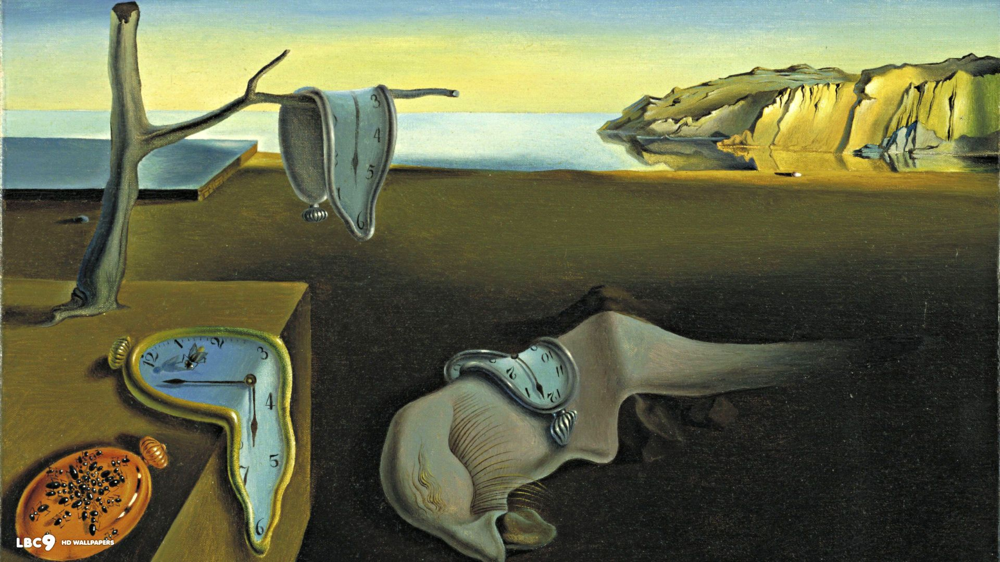
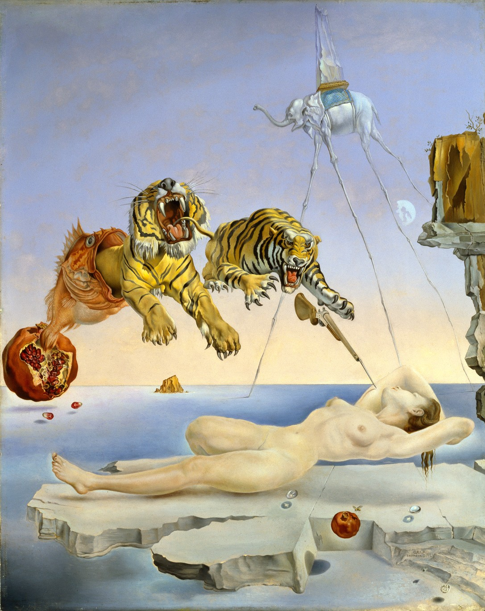

- 
- 
Salvador Dali
Dalí je u povijesti zapamćen po svojim snažnim i bizarnim slikama, te kao jedan od najpoznatijih predstavnika nadrealizma u slikarstvu. No, unatoč njegovom jedinstvenom načinu slikanja, mnogi stručnjaci upravo taj način atributiraju utjecaju renesansnih majstora. Među njegovim enormnim opusom ipak je najpoznatija njegova slika Postojanost pamćenja (Mekani satovi) dovršena 1931., koja je, osim po svojoj iznimnoj umjetničkoj vrijednosti, poznata po tome što je korištena u mnogim igranim i animiranim filmovima.
Svoje umjetničke ambicije, Dalí je usmjerio i na fotografiju, dizajn, književnost i snimanje filmova. Surađivao je i s Waltom Disneyjem na nikad dovršenom, za Oscara nominiranom animiranom filmu pod nazivom Destino, koji je dovršen i izdan tek 2003. godine. Na području igranog filma surađivao je sa slavnim Alfredom Hitchcockom na filmu Začarana iz 1945. za koji je napravio slavnu scenu sna, a sa svojim prijateljem, redateljem Luisom Buñuelom surađivao je (scenarij i gluma) na avangardnim filmovima Andaluzijski pas i Zlatno doba.
POGLEDAJTE JOŠ

Vincent van Gogh

Gustav Klimt